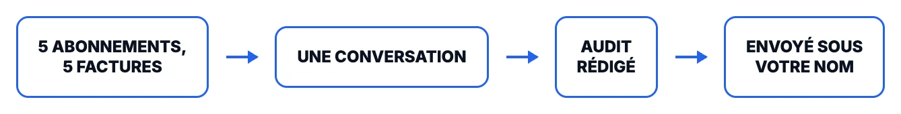
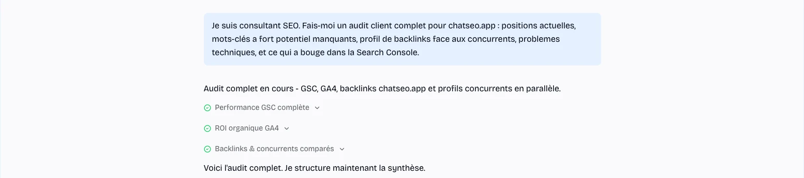
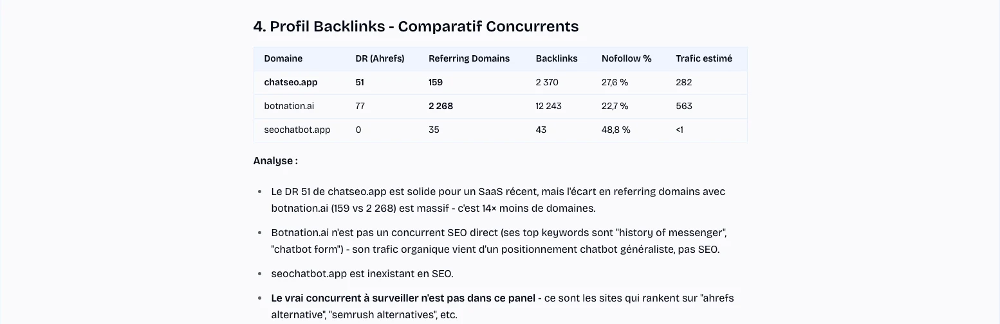
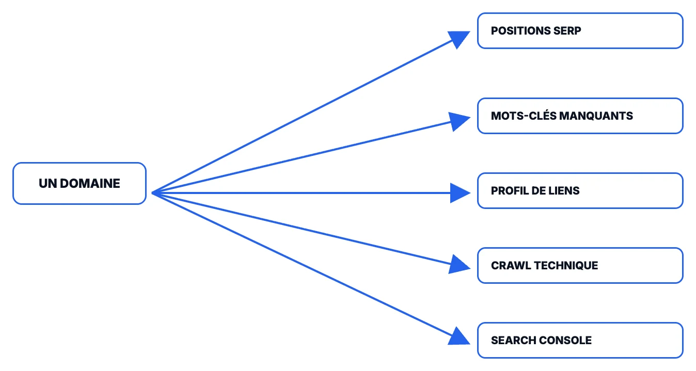

Rank tracker, outil de mots-clés, outil de backlinks, crawler, Search Console. Cinq abonnements, cinq exports, et le vrai travail commence après : les faire dire la même chose. Voici la version en une conversation, sur un domaine réel.
600+ clients chez ChatSEO. Beaucoup sont consultants ou agences et l'utilisent pour leurs propres clients.
Avec Nicholas, sur un vrai audit client

ChatSEO, avec la Search Console et Analytics connectés, produit des résultats impressionnants et détaillés. Ça nous a aidés à signer un contrat pluriannuel avec un cabinet d'avocats du top 100 au Royaume-Uni, tant ils ont été impressionnés par le niveau de détail de nos rapports. En plus de ça, l'équipe a ajouté une fonctionnalité qu'on avait demandée. Vivement recommandé !
Avis vérifié sur Trustpilot · traduit de l'anglais
Lancez-le sur un dossier client cet après-midi et comparez au dernier audit que vous avez fait.
Une ligne. Ça marche sur un client que vous suivez depuis des années comme sur un prospect que vous démarchez demain : connectez sa Search Console pour la lecture la plus complète, ou lancez-le en mode recherche SEO sur n'importe quel site externe, sans rien connecter du tout.
Positions, mots-clés manquants, backlinks face à des concurrents nommés, problèmes techniques et d'indexation, Search Console, le tout en parallèle, dans le même fil.

Réservez 15 minutes si vous préférez qu'on lance le premier ensemble, sur un vrai dossier client.
Pas cinq CSV à recouper à la main. Un document : les chiffres, qui gagne vraiment et pourquoi, et ce qu'il faut corriger en premier.

Ceci a tourné en direct sur chatseo.app, pour cette page. Rien ici n'a été retouché ou raccourci après coup.
La relation client, les contraintes que la donnée ne voit pas, le choix de ce qui vaut le coup ce trimestre : ça reste vous. Ce que vous ne faites plus, c'est la collecte.
Connectez la Search Console du client une fois. Tout le reste fonctionne sans elle, mais la comparaison avec ce qui a vraiment bougé (la seule chose qu'un rank tracker ne peut pas dire) n'existe qu'une fois qu'elle est connectée. Faites-le à l'onboarding, sinon le deuxième audit reste une photo isolée.
Même couverture, un seul fil, une conversation qui se souvient de la précédente.

| Ce que vous ouvriez avant | Ce que ChatSEO tire, dans le même fil |
|---|---|
| Rank tracker | Positions de mots-clés en direct |
| Outil de mots-clés | Volume, difficulté, et les manques face aux concurrents nommés |
| Outil de backlinks | Domaines référents, ancres, manques de deeplinking |
| Crawler | Indexation, problèmes techniques, vérifications page par page |
| Search Console | Ce qui a vraiment bougé, période sur période |
Rien de tout ça ne remplace le jugement que le client paie chez un consultant. Ce que ça remplace, c'est la partie que personne ne facture jamais vraiment : ouvrir cinq onglets, exporter cinq fichiers, et les faire dire la même chose avant que la vraie réflexion puisse commencer.
Prenez un domaine que vous connaissez déjà bien et voyez ce qu'il trouve que votre dernier audit n'avait pas vu. Essayez vous-même avec vos crédits gratuits, ou réservez un appel et on lance le premier ensemble.
Sans carte bancaire · ou on vous accompagne en direct